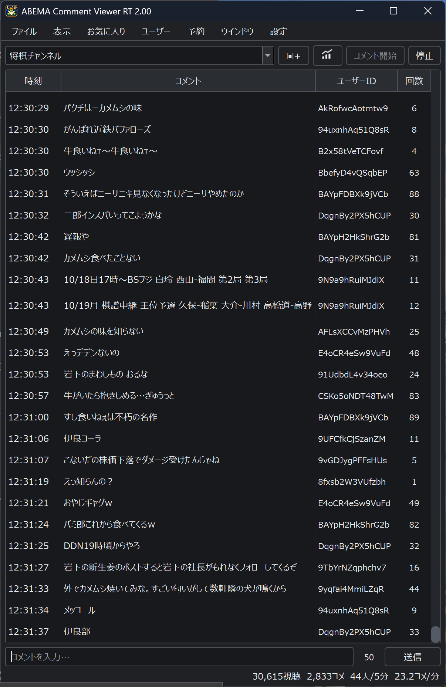
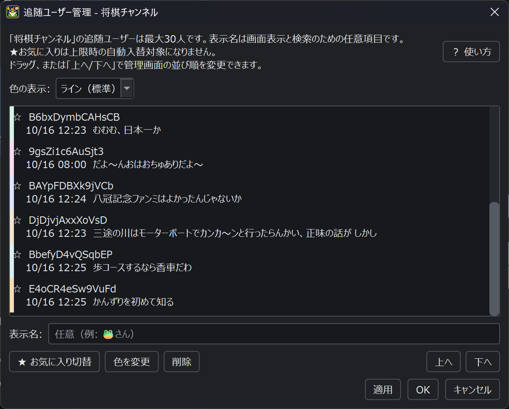
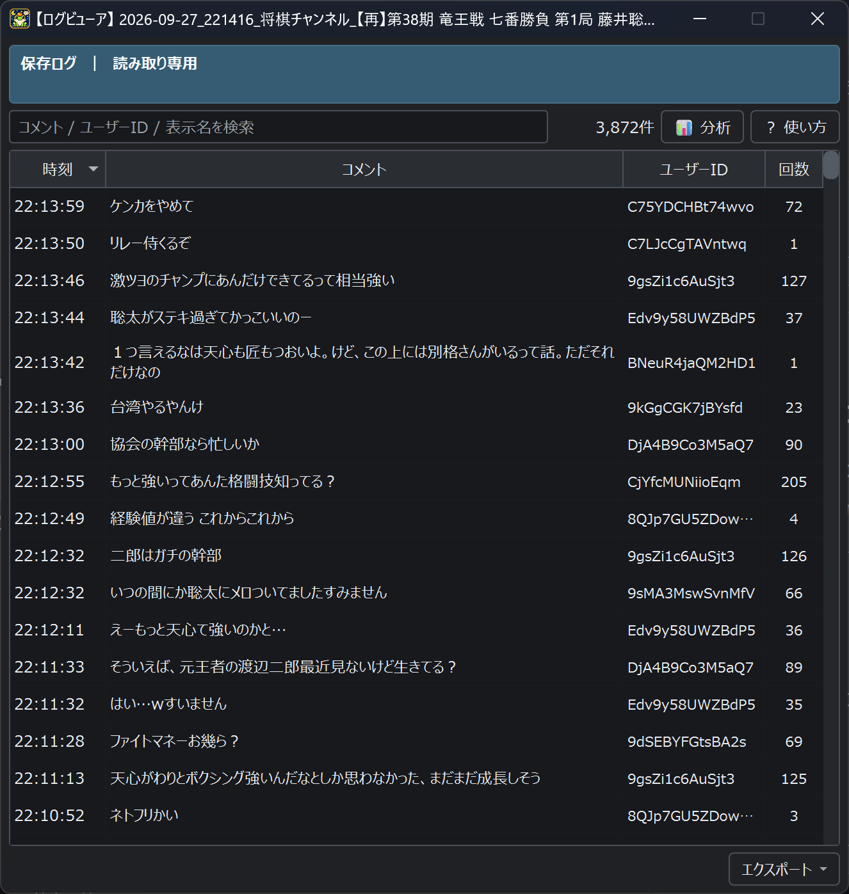

01 / コメントを読む・投稿する
リアルタイムコメント
チャンネルを選ぶとコメントを受信できます。コメント入力欄からの投稿にも対応しています。

WINDOWS VERSION
ABEMA Comment Viewer RTを初めて使う方向けの案内ページです。
画面画像を追加すると、操作の流れをより分かりやすく紹介できます。
ABEMAのコメントを閲覧・投稿するためのWindows向けビューアです。
ZIPを展開して ABEMA Comment Viewer RT.exe を起動します。初回、またはトークンの期限切れ時は、画面の案内に従ってトークンを取得してください。
01 / コメントを読む・投稿する
チャンネルを選ぶとコメントを受信できます。コメント入力欄からの投稿にも対応しています。

02 / 複数チャンネルを見る
メインとサブで別のチャンネルを同時に受信できます。タブごとに履歴・未読・検索・分析・ログ保存を保持します。
03 / 必要なコメントを探す
Ctrl + F で検索欄を開けます。コメントやユーザーIDで絞り込めます。
04 / 番組の反応を見る
投稿数ランキング、投稿回数分布、コメント推移グラフを表示できます。推移グラフから該当時刻のコメントへ移動できます。
05 / 見やすく整える
追随ユーザーとNGユーザーはチャンネルごとに保存されます。表示項目では、時刻・ユーザーID・回数・番組情報・統計情報などから必要なものだけを選び、コメント欄を見やすくできます。

追随ユーザー管理画面。表示項目のメニュー画像は、後から同じ箇所に追加できます。
06 / 後から見返す
表示中のタブのコメントを保存できます。保存したログはログビューアで開き、検索や分析に利用できます。

初回はトークン取得画面が表示されます。案内に従って取得すると、通常は次回以降そのまま利用できます。
画面左上のチャンネル選択から、視聴したいABEMAチャンネルを選択します。現在配信中の番組情報とコメントが表示されます。
受信中は新しいコメントが一覧に追加されます。読み返している途中では、最新コメントへボタンから最新位置へ戻れます。
タブ追加ボタンからサブタブを開くと、別チャンネルも同時に受信できます。未読数は各タブで確認できます。
設定内のトークン画面から、状態を確認できます。再取得する場合は 「再取得（localStorageを削除）」 を使用します。
チャンネルと番組の配信状況を確認してください。一時チャンネルなどが終了した場合は、タブ上に状態を表示したまま受信を停止します。